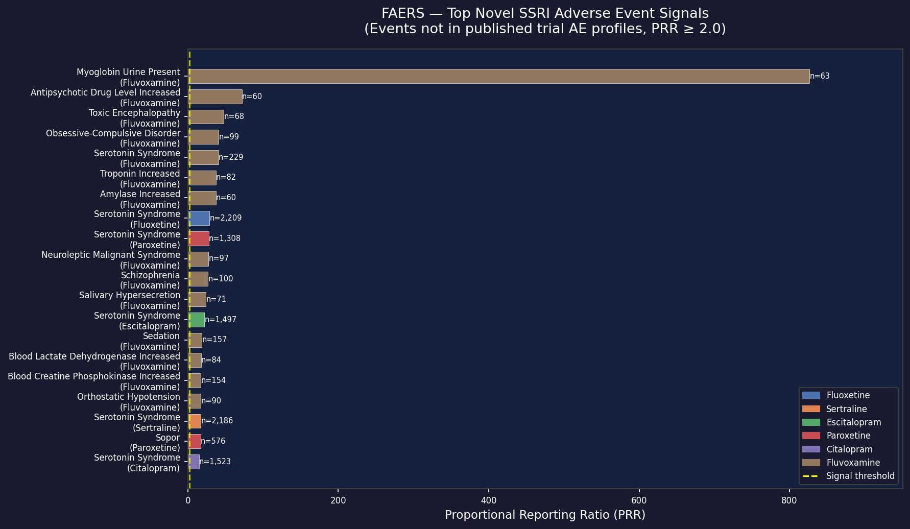
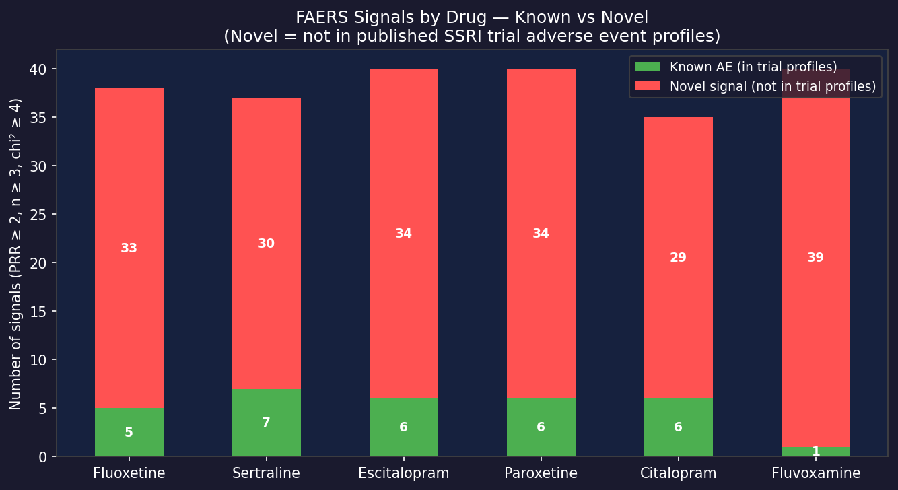
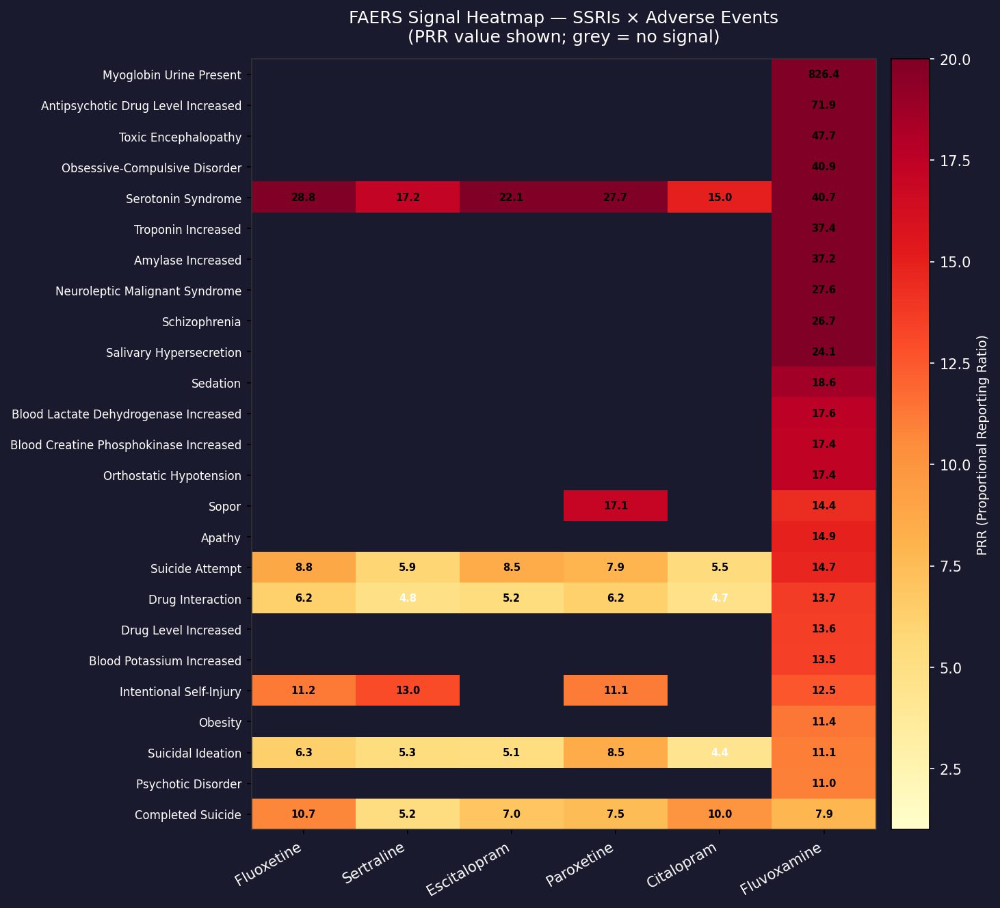

Key Findings
Visualizations



Top Novel Signals (Partial — 15 of 199)
Signals meeting Evans criteria (PRR ≥ 2.0, n ≥ 3, chi² ≥ 4) not listed in published SSRI clinical trial adverse event profiles. Full table (199 signals with confidence intervals) available to subscribers.
| Drug | Adverse Event | Reports (n) | PRR | Chi² | Status |
|---|---|---|---|---|---|
| Fluvoxamine | Myoglobin Urine Present | 63 | 826.4 | 51,115 | novel |
| Fluvoxamine | Antipsychotic Drug Level Increased | 60 | 71.9 | 4,122 | novel |
| Fluvoxamine | Toxic Encephalopathy | 68 | 47.7 | 3,060 | novel |
| Fluvoxamine | Serotonin Syndrome | 229 | 40.7 | 8,822 | novel |
| Fluoxetine | Serotonin Syndrome | 2,209 | 28.8 | 59,203 | novel |
| Paroxetine | Serotonin Syndrome | 1,308 | 27.7 | 33,656 | novel |
| Escitalopram | Serotonin Syndrome | 1,497 | 22.1 | 30,170 | novel |
| Sertraline | Serotonin Syndrome | 2,186 | 17.2 | 33,383 | novel |
| Sertraline | Intentional Self-Injury | 1,750 | 13.0 | 19,321 | novel |
| Fluoxetine | Completed Suicide | 3,636 | 10.7 | 32,107 | novel |
| Citalopram | Completed Suicide | 4,490 | 10.0 | 36,407 | novel |
| Citalopram | QT Interval Prolonged | 1,750 | 9.2 | 12,690 | novel |
| Escitalopram | QT Interval Prolonged | 1,129 | 8.9 | 7,873 | novel |
| Sertraline | Hyponatraemia | 1,722 | 4.6 | 4,769 | novel |
| Sertraline | Fall | 4,765 | 2.2 | 2,934 | novel |
Methodology
Data Source
FDA FAERS (Adverse Event Reporting System) via openFDA public API.
Covers 2004–present; voluntary adverse event reports submitted by patients, providers,
and manufacturers. Total: 20,006,989 reports as of March 2026.
Signal Criteria
Evans et al. standard pharmacovigilance criteria: PRR ≥ 2.0,
count ≥ 3, chi² ≥ 4.0. PRR is computed as
(a/N_drug) / (N_event/N_total) using 2×2 contingency table.
Comparison Baseline
"Known" AEs are compared against a conservative set of ~20 events from published SSRI clinical trial adverse event profiles (nausea, insomnia, headache, dry mouth, sexual dysfunction, etc.). Events not in this list are flagged as "novel" — meaning post-market signal not prominently captured in registration-era trial data.
Limitations
FAERS captures reports, not causation. High PRR = disproportionate reporting, not proven harm. Notable biases: notoriety bias (publicized effects are over-reported), Weber effect, indication bias (SSRIs prescribed for depression — baseline suicide risk is elevated), and co-medication confounding.
Data Access
Researcher Tier
Full signal tables (199 signals), CSV exports, monthly delta reports, chi² confidence intervals.
Subscribe
Professional Tier
Everything above + custom drug queries, historical signal emergence data (2004–present), API access.
Contact
Expert Support
Litigation support documentation, expert methodology letters, custom adverse event analysis.
Inquire